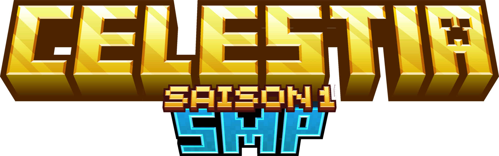

Un monde à explorer
Explore le monde, récupere des ressources, fait toi un stuff, crée ta guilde et ta base, affronte d'autres joueurs...
01
Jouer maintenant ↗Bienvenue sur Celestia SMP, un serveur Minecraft francophone java, bedrock et crack.
Explore un nouveau monde, construis ton royaume et pars à l’aventure avec une communauté qui n’attend que toi.
01 / À PROPOS
Celestia est un serveur Minecraft SMP (Survival MultiPlayer) en paper 1.21.11.
Explore le monde, récupere des ressources, fait toi un stuff, crée ta guilde et ta base, affronte d'autres joueurs...
01Crée une team, invite des joueurs, construisez votre base, dépassez les autres guildes...
02Fais des rencontres, forme des alliances et partage tes plus belles aventures.
0302 / FONCTIONNALITÉS
Voici les principales fonctionnalités sur Celestia.
D'autres arriveront dans le futur.
Une expérience de survie où chaque ressource compte et chaque construction raconte quelque chose.
Achète, vend, échange des items avec les autres joueurs grace au /ah, /trade, /order, /sell...
Evolue et monte en grades pour obtenir de nouvelles fonctionnalités.
Téléporte toi à ta base ou a d'autres endroits quand tu veux avec le /tpa, /home, /rtp, /warp...
Les spawners sont minables avec slik tuch et le loot et l'xp spawn directement à l'interieur
Mine tout un arbre ou un filon de minerais en en cassant un seul bloc
03 / RÈGLES DU SERVEUR
Quelques règles essentielles pour que Celestia reste un endroit agréable pour tout le monde.
Le harcèlement, la discrimination (racisme, homophobie, sexisme, etc.), les insultes et la provocation ne sont pas acceptés sur le serveur.
L'utilisation de cheats, clients de cheat, macros... sont strictement interdits.
La duplication d'items ou utilisation de tout bug est proscrite. Si vous trouvez un bug, veuillez le signaler au staff du serveur.
Le spam, flood, publicité sont interdits dans le chat du serveur.
La creation de machines dans le seul but de faire lag le serveur sont interdites
Les builds déplacés, à caractere haineux ou offensant, ou visant seulement à détruire le paysage sont proscrits et pourront être détruits pas le staff.
Déconnecter pour fuir un combat PVP n'est pas auorisé, vous perdrez tout votre stuff en le faisant
Les sanctions sont décidées cas par cas par un membre du staff et dépendent de la gravités de l'infraction. Elles peuvent aller du simple avertissement eu bannissement définitif.
04 / REJOINDRE L’AVENTURE
Celestia est accessible en Java (avec l'IP) et Bedrock (IP + Port) en 1.21 et + (conséillé 1.21.11)
Si tu as un problème pour te connecter, n'hésite pas à contacter le staff (Discord ou Whatsapp).
05 / SOUTIENS CELESTIA
06 / CONTACT
Une question ou une suggestion ? Tu peux contacter le staff ou juste discuter avec les autres joueurs sur Discord et Whatsapp